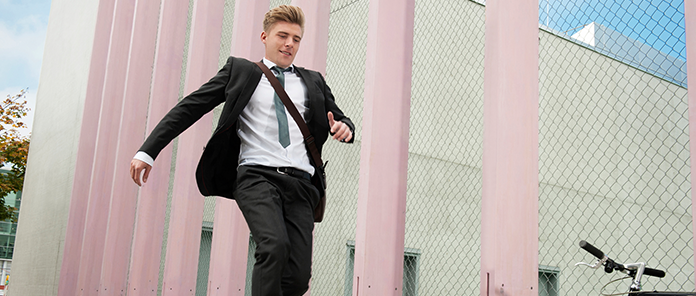
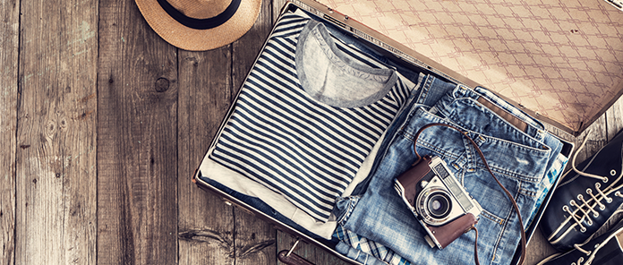
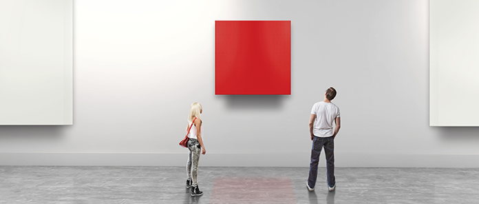
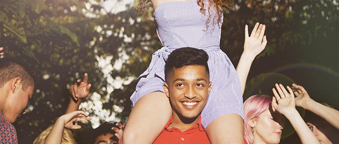
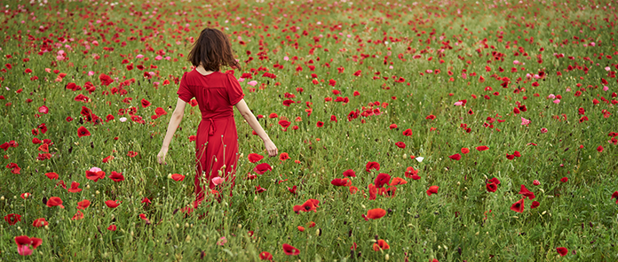

FUN+WALK PROJECTとは？
FUN+WALK PROJECTは、
歩くことをもっと楽しく、
楽しいことをもっと健康的なものにする
スポーツ庁の官民連携プロジェクトです。
「歩く」を入口に、
国民の健康増進を目指しています。
-
グルメ+WALK
歩いた分だけ、きっとごはんもお酒もおいしくなる。
脂肪だって、つきにくくなる。
ランチタイムや帰り道に「歩く」を足して、
とっておきのおいしい！をみつけよう。 -
仕事+WALK
知ってますか？ 歩くほど、
脳に酸素が回って、頭の回転が速くなること。
通勤やオフィスに「歩く」を足して、
あなたの仕事効率を上げよう。 -
音楽+WALK
音楽を聴くと、元気になる。
歩きながら聴くと、もっと元気になる。
大好きな音楽に「歩く」を足して、
もっと心地よい１日を過ごそう。 -

ファッション+WALK
歩きやすい格好なら、
顔つき明るく、仕事もはかどる。
あなたの好きなファッションに「歩く」を足して、
もっと前向きな自分になろう。 -
デート+WALK
歩きながら話すと、会話も弾む。心も弾む。
デートに「歩く」を足して、
ふたりの距離をもっと縮めよう。 -
美容+WALK
歩くと、血行が良くなる。
むくみがとれる。美肌効果も期待できる。
これまでの美容習慣に「歩く」を足して、
もっとキレイになっちゃおう。 -
ショッピング+WALK
本当にほしいものなんて、
出会ってみなければわからない。
ショッピングに「歩く」を足して、
運命の何かと出会おう。 -
写真+WALK
歩いた分だけ、
シャッターチャンスはやってくる。
カメラに「歩く」を足して、
とびっきりの一枚を撮ろう。 -

旅行+WALK
電車や、バスや、車だけでは、
いけない場所がたくさんある。
あなたの旅行に「歩く」を足して、
もっと特別な思い出をつくろう。 -

アート+WALK
美術館や博物館、
あるいは漫画やアニメの聖地へ。
大好きなアートに「歩く」を足して、
もっと大きな感動に出会おう。 -

イベント+WALK
平日も休日も祝日も、
「歩く」につながるイベントがいっぱい。
楽しい時間に「歩く」を足して、
もっと楽しい時間にしよう。 -

自然+WALK
緑を見ると、リラックスできる。
でも、緑の中を歩けば、さらにリフレッシュできる。
あなたが行ってみたい自然に「歩く」を足して、
心も体もスッキリしよう。